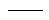
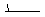

Q. What is Fast Rendering and when should I use it?
Q. What is the difference between the Standard Atmosphere and Vis5D pressure to height conversion?
P = 1012.5 * e^( H / -7.2 ) (^ denotes exponentiation)
H = -7.2 * Ln( P / 1012.5 ) (Ln denotes natural log)
so it can be used for heights above 80 km.Q. Why do I get an error when I try to load radar data that I downloaded from NCEI?
- The files are in a compressed tar file - Typically, when you download Level II data from NCEI, the files are in a compressed TAR file which holds the individual volume scans. You need to extract the volumes from the TAR file with utilities like tar, gunzip, WinZip into a directory.
- You are using the Files chooser - You should load the radar data using the Radar->Level II->Local file chooser in the Data Sources tab of the Data Explorer, not the General->Files chooser. In some cases, the files do not have any location information in them. The Level II data chooser allows you to associate a station location with the data file, using the directory name as a first guess.
- You are trying to load Level III raster products - McIDAS-V only handles the Level III data that is stored in radial format (Base Reflectivity, Storm Relative Velocity, Base Velocity, 1 and 3 hour precipitation, Echo Tops).
Q. When I try to read in my GRIB data, why do I get an ucar.grib.NotSupportedException?
Q. How are grids resampled in McIDAS-V?
Q. Why can't I create a time series from single time grid files?
A. If you receive an error message similar to the following:
An error has occurred:
Creating display: Color-Shaded Plan View
org.python.core.PyException
visad.UnitException: visad.UnitException: Set: units dimension 1 does
not match Domain dimension 2
the files may not have a "time" dimension defined in them. It is recommended that you use the NetCDF Markup Language (NcML) to aggregate the files. See http://www.unidata.ucar.edu/software/thredds/current/netcdf-java/ncml/Aggregation.html for more information on aggregating files.
Q. How do I create a time series from individual grid files with different time steps?
A. If you have individual files of gridded data for multiple time steps that you want to display as a single layer to utilize the Time Animation Widget, there are two methods of doing this. First, in the Data Sources tab of the Data Explorer, navigate to the Gridded Data->Local or the General Files/Directories chooser. Select the Aggregate Grids by Time Data Type, navigate to the directory where your files are stored, and use Shift+click to select the files you wish to include in your layer. In the Field Selector, you will see that all of the times you selected for the data are grouped together. You can select your display type, create the display, and all of the data times will be loaded in as one layer and you can animate through them.
Alternatively, you can add all of the files individually through the Gridded Data->Local or General->Files/Directories chooser (without the Aggregate Grids by Time Data Type) and use the Make a time sequence from single time grids/images formula. This is a native formula of McIDAS-V that can be found under the Miscellaneous tree of formulas in the Field Selector. Using this formula, you can select all of the individual files, and McIDAS-V will add all of them to the Main Display window as a single layer you can animate through time.
A. Below is a table that shows different wind speed thresholds when it comes to plotting wind barbs of gridded or point data. In this table, 'x' represents wind speed in knots.
| Wind Barb | Knots | Wind Barb | Knots |
|---|---|---|---|
| x = 0 | 52.6 ≤ x ≤ 57.5 | ||
|  | 0 < x ≤ 2.5 | 57.6 ≤ x ≤ 62.5 | |
|  | 2.6 ≤ x ≤ 7.5 | 62.6 ≤ x ≤ 67.5 | |
| 7.6 ≤ x ≤ 12.5 | 67.6 ≤ x ≤ 72.5 | ||
| 12.6 ≤ x ≤ 17.5 | 72.6 ≤ x ≤ 77.5 | ||
| 17.6 ≤ x ≤ 22.5 | 77.6 ≤ x ≤ 82.5 | ||
| 22.6 ≤ x ≤ 27.5 | 82.6 ≤ x ≤ 87.5 | ||
| 27.6 ≤ x ≤ 32.5 | 87.6 ≤ x ≤ 92.5 | ||
| 32.6 ≤ x ≤ 37.5 | 92.6 ≤ x ≤ 97.5 | ||
| 37.6 ≤ x ≤ 42.5 | 97.6 ≤ x ≤ 102.5 | ||
| 42.6 ≤ x ≤ 47.5 | 102.6 ≤ x ≤ 107.5 | ||
| 47.6 ≤ x ≤ 52.5 | 107.6 ≤ x ≤ 112.5 |